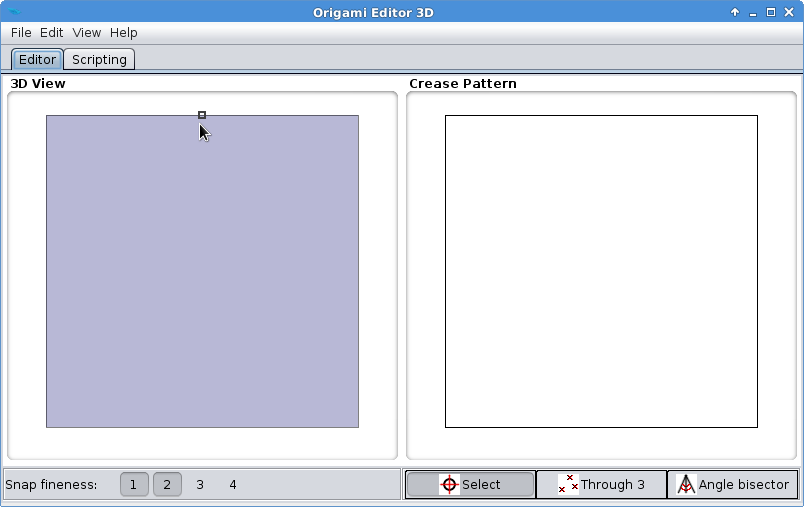
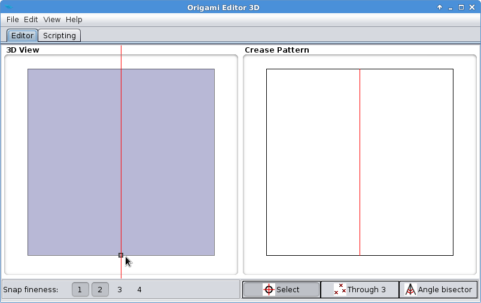
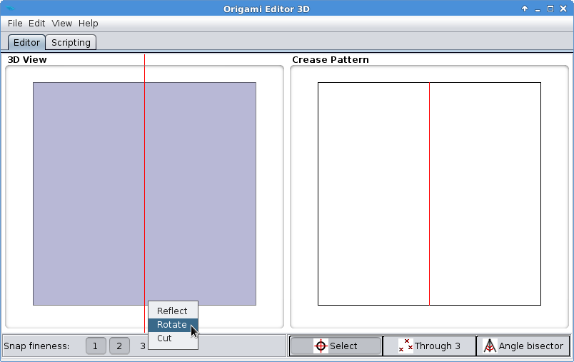
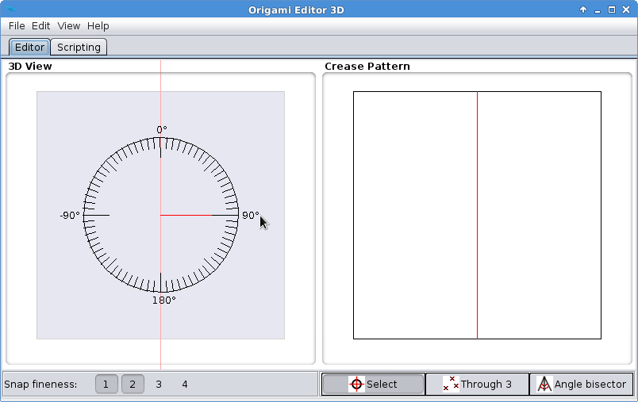
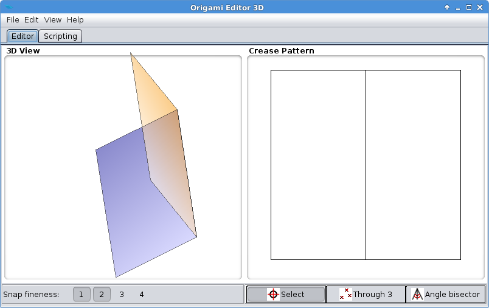
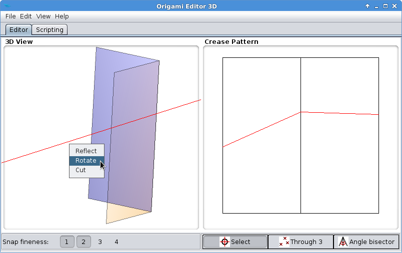
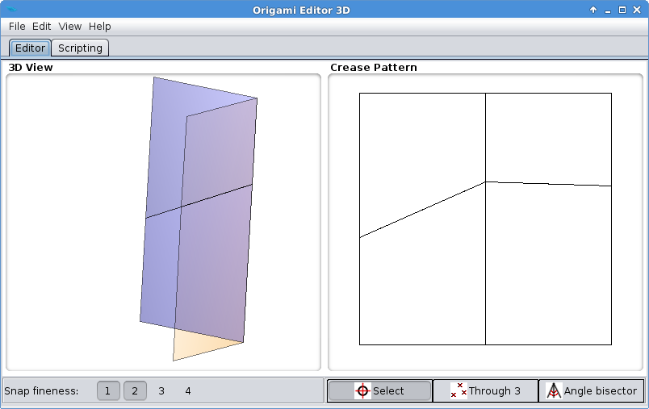

Rotation Tool
Rotation Tool is a primitive folding tool, but it can be useful sometimes and is easy to learn. What it does is quite straightforward: it creases the paper along the Ruler and rotates the two sides relative to each other by the given angle.
If the Ruler doesn't intersect the origami in a single line, rotation is not possible because there is no axis to rotate around. In this case, Rotation Tool will do nothing except adding the crease lines. When this happens, Reflection Tool should be used instead.
- Move the mouse to the middle of the paper's top edge until a small black square appears:

This black square indicates that the Snap to midpoints option is on and the Ruler will be snapped exactly to the center of the top edge.
- Right click to activate the Ruler. Move the mouse to the middle of the bottom edge until another black square pops up:

- Right click again. Choose Rotate from the popup menu.

- The image of a protractor will appear. Move the mouse to the 90° notch, then click with the left mouse button.

- You have folded the paper into a book shape.

Exercise 2
This exercise will show you a typical situation where Rotation Tool is not suitable.
- Proceed with the same 90° folded paper you made in the first exercise. Place the ruler crosswise through the middle folding line, and click Rotate.

- Choose an angle on the protractor.

- The paper will be creased but not moved anywhere.

Rotation Tool doesn't work on this folding line because it would tear the paper apart. In the next chapter, you will learn how to solve this problem.